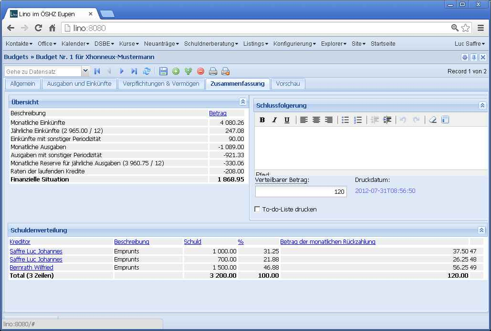

20130130¶
This morning we released Lino 1.5.7 and Lino-Welfare 1.0.10.
Warum man auto_now_add nicht benutzen sollte¶
Hier was Lustiges: ich hatte einen ddt gemacht,
bei dem die a.py kurz vor Mitternacht und die b.py kurz danach erstellt worden war.
Daraufhin meldete diff:
lsaffre@lino:/usr/local/django/testlino$ diff fixtures/a.py fixtures/b.py
34914,34915c34914,34915
< yield create_outbox_mail(1,notes_Note,3545,200067,200007,date(2013,1,29),u'Ereignis/Notiz #3545',u'<h1></h1>\r\n<p>\r\nAktennotiz / Lebenslauf\r\n</p>\r\n<div>\r\n\r\n</div>\r\n<p>User: Luc Saffre</p>',dt(2012,7,30,18,25,9))
< yield create_outbox_mail(2,notes_Note,3545,200067,200007,date(2013,1,29),u'Ereignis/Notiz #3545',u'<h1></h1>\r\n<p>\r\nAktennotiz / Lebenslauf\r\n</p>\r\n<div>\r\nPlease see the attached file.\r\n</div>\r\n<p>User: Luc Saffre</p>',None)
---
> yield create_outbox_mail(1,notes_Note,3545,200067,200007,date(2013,1,30),u'Ereignis/Notiz #3545',u'<h1></h1>\r\n<p>\r\nAktennotiz / Lebenslauf\r\n</p>\r\n<div>\r\n\r\n</div>\r\n<p>User: Luc Saffre</p>',dt(2012,7,30,18,25,9))
> yield create_outbox_mail(2,notes_Note,3545,200067,200007,date(2013,1,30),u'Ereignis/Notiz #3545',u'<h1></h1>\r\n<p>\r\nAktennotiz / Lebenslauf\r\n</p>\r\n<div>\r\nPlease see the attached file.\r\n</div>\r\n<p>User: Luc Saffre</p>',None)
Der Unterschied ist das siebte Feld, date, das bisher mit auto_now_add=True war. Jetzt habe ich das ersetzt durch eine Methode on_create:
def on_create(self,ar):
self.date = datetime.date.today()
super(Mail,self).on_create(ar)
Eine Reparatur der bestehenden Daten ist nicht nötig, weil bisher erst zwei solcher manuellen Mails von Lino aus verschickt wurden.
Miscellaneous¶
lino.utils.dumpy.Serializernow raises an exception if it finds a field with auto_now_add:$ python manage.py dumpdata --format py ... Error: Unable to serialize database: outbox.Mail.date.auto_now_add is True : values will be lost!
I recently had changed IntegerFieldElement and DecimalFieldElement to use xtype instead of value_template. That wasa bad idea, it caused “Uncaught TypeError: Object #<Object> has no method ‘getValue’” when such fields were used in a parameter panel.
lino_welfare.modlib.isip.models.ContractBase: update_reminders ignored premature ending (date_ended) when creating the reminder “Contracts ends in a month”.Im BudgetSummary fehlten jährliche Einnahmen sowie Ausgaben und Einnahmen “mit sonstiger Periodizität”.
Der Text der letzten Zeile der Übersicht eines Budgets lautet jetzt nicht mehr “Total (5 Zeilen)” sondern
Summenzeilen werden jetzt in Fett gedruckt.
Die goodbye-Meldung in atexit, die bisher nur von watch_tim gemacht wurde, wird jetzt für alle Prozesse in kernel.site_startup gemacht.
After the release¶
After the release some optimizations and one enlightment in Lino-Welfare:
- Wenn eine Tx25 gefehlt hat weil die Person nicht integriert ist, dann meldete Lino beim bloßen Anschauen dieser Tx25 (im Detail) einen AttributeError “reply instance has no attribute ‘rrn_it_implicit’ ” an die Admins.
- Das Ankreuzfeld “Chronik” einer neuen Tx25 ist jetzt par défaut angekreuzt.
- Erleuchtung: Nach den neuesten Erfahrungen würde ich sagen: der Bearbeitungszustand “Ungültig” für Klienten kommt komplett raus, basta. Die Gültigkeit der INSS hat keinerlei Einfluss auf irgendwelche Workflows.
Much work for little visible result¶
Look at the table “Schuldenverteilung” in the screenshot below:
The last column (without header and containing numbers 47, 48 and 49) was too much. This bug came because of a design mistake: the ar2html method worked using the fields of the store and not using the columns of the grid. Don’t remember what mosquito had bitten me when I had written this. I had seen this mistake already some time ago but knew that it would improve only the inner beauty and take much time. Now I finally did it. Took only two hours. Python is great! Such important code changes would be much more painful in Java.
The show management command¶
To test the above change I added a new management command
show.
Usage examples:
$ python manage.py show users.UsersOverview
============== ======================================= =========
Benutzername Benutzerprofil Sprache
-------------- --------------------------------------- ---------
alicia Begleiter im DSBE fr
caroline Berater Neuanträge de
hubert Begleiter im DSBE de
kerstin Schuldenberater de
melanie Integrations-Assistent (Dienstleiter) fr
robin Verwalter en
rolf Verwalter de
romain Verwalter fr
============== ======================================= =========
$ python manage.py show pcsw.UsersWithClients
====================== ======= =========== =========== ========= ========= ====================== ================= ========
Begleiter Bilan Formation Recherche Travail Standby Primäre Begleitungen Aktive Klienten Total
---------------------- ------- ----------- ----------- --------- --------- ---------------------- ----------------- --------
Alicia Allmanns 2 1 1 4 3 10
Hubert Huppertz 3 2 3 4 1 4 12 22
Mélanie Mélard 4 5 4 4 6 20 17 24
**Total (3 Zeilen)** **7** **9** **8** **8** **8** **28** **32** **56**
====================== ======= =========== =========== ========= ========= ====================== ================= ========
The bootstrap UI is getting better¶
Lino’s “plain html” UI is getting better:
- Detail forms
- Pagination bar
The current internal name “plain” is misleading. It’s not very plain html because it uses bootstrap
django-extensions¶
Ich habe mir mal das Modul django-extensions angeschaut.

{kind=link}